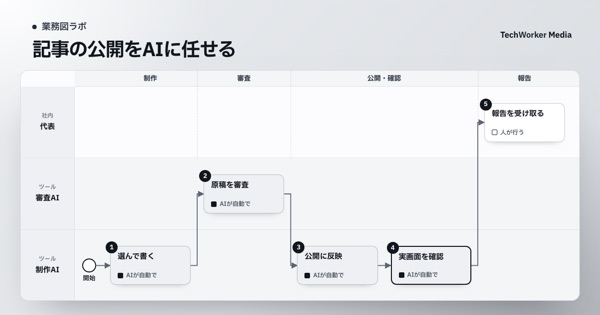

記事の調査から公開まで、AIが平日に進めます
発信（自社メディア）｜題材選び・調査・執筆・審査・公開・表示の確認を平日に回す
自社サイトのメディアの記事を、AIが題材選びから公開まで進めます。調べて根拠をつけて書き、表紙と図を作り、別の目で審査します。通った回だけ公開し、PC とスマホで表示を確かめます。
自社の計測閲覧と検索の数字
例| 記事 | 閲覧 | 検索の表示 |
|---|---|---|
| 研修の費用の記事 | 120 | 40 |
| 業務図の作り方 | 60 | 25 |
公式の発表新しい情報の原文
例発表：新しいモデルの提供開始
発表：管理画面の機能の追加
社内：研修で出た質問の記録
AIの処理Codex の自動実行（平日8:45）
- 1題材を1本選ぶ
自社のノウハウか最新情報から選びます
- 2書いて審査する
別の目で事実と文章を確かめます
- 3公開して確かめる
PC とスマホの表示を見ます
記事のページtechworker.co.jp/media
例- 媒体
- 業務図ラボ
- 題
- 月次決算の業務図の例
- 表紙と図
- 2点・出典つき
- 人が決めること
- 公開前の承認はしません。止まった回の原因は代表が受け取ります
- AIがしないこと
- 審査に通らない回は公開せず、本数も増やしません
画面の中身は例です（実際の社名・内容ではありません）
課題
- 5つの媒体の記事を、同じ手順で出し続ける必要がありました
- 審査の後、公開されずに止まる回がありました
改善結果
29本
9月2日以降に足した記事のうち、公開中の本数
2026年10月19日時点
動き方
- 2026年8月17日に始め、今は平日に毎日起動
- 審査に通った回だけを公開
本数
- 9月2日以降に足した記事のうち、公開中は29本
- 5つの媒体に、題材を選んで1本ずつ公開
背景
自社のメディアは5つの媒体に分かれ、題材選びから表示の確認まで手順が多くあります。2026年8月17日から、AIが計測から公開までを1回の流れで進めています。代表は公開の前に承認せず、止まった回は原因と再開の条件が報告されます。

業務図ラボの記事記事の公開をAIに任せる｜題材選びから表示の確認まで、審査で止める業務図→出典：社内の自動実行の設定と自社サイトの公開の記録（2026年10月19日時点）／注：画面の中身は例
この形を、御社の仕事で試せます。
ギョウムズAI（業務図とAIの運用）は、2週間の無料検証から始められます。AIに任せる仕事の引き継ぎ書（業務図・判断の一覧など）を作ってお渡しします。
ほかのご相談はお問い合わせから。ギョウムズAIの紹介も見られます。ほかの事例
事例の一覧へ →当社｜営業社内で動くAIエージェント
全国の自治体の募集を、AIが毎日2回探します
全国の自治体の募集から、業務図・聞き取り・研修で応募できる物をAIが探します。参加資格・実績の証明・提出書類を原文で確かめ、受付中から受注までの段を混ぜずに数えます。
1,794件台帳に登録した全国の探し先当社｜営業社内で動くAIエージェント商談会の依頼の返事を、AIが毎日2回見回ります
参加中の商談会の申込画面を、AIが毎日9時と15時に見ます。依頼した会社の返事・相手からの依頼・事務局のメールを前回と比べ、変わった所だけを短く知らせます。
28回10月1日〜19日の見回りの回数当社｜経営社内で動くAIエージェント想定外の課金を、AIが週2回見張ります
従量課金のサービスで、想定外の課金・止まらない処理・支払いの失敗が無いかを、AIが週2回点検します。台帳の上限と比べて判定を3段で書き、警告のときだけ代表のスマホに知らせます。
6回10月8日〜19日に点検した回数